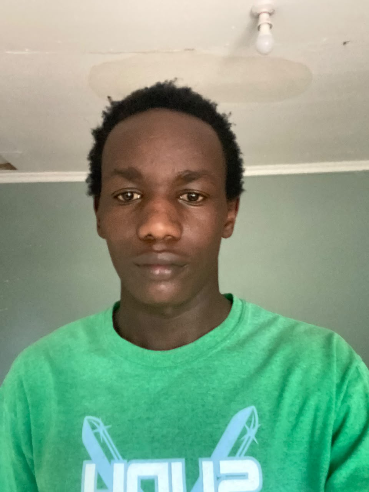

01 / AI
AI annotation and training tasks
Available for AI annotation, evaluation, and related tasks that help train and improve AI systems, with careful attention to instructions and accuracy.
I’m Gregory Kipchumba, known as Gregoh. I study Political Science and Public Administration at Moi University and bring together an interest in people, artificial intelligence, mobile technology, and digital media.
Based in Eldoret, Kenya
My studies help me think about how communities, institutions, and public decisions shape everyday life. Alongside university, I repair mobile phones, including screen replacements, and take on AI annotation, evaluation, and other tasks that support AI training.
I enjoy learning by doing, solving practical problems, and communicating ideas in a clear and useful way. I’m building a path that combines thoughtful analysis with hands-on technology and creative work.
My experience spans careful evaluation, technical troubleshooting, and making content for digital audiences.
Available for AI annotation, evaluation, and related tasks that help train and improve AI systems, with careful attention to instructions and accuracy.
Phone repair services for a range of issues, including screen replacement, diagnostics, and other repairs.
Creating digital content and media with an interest in clear communication and engaging presentation.
Studying governance, public institutions, and the issues that shape communities and public life.
Contact me about mobile phone repairs, including screen replacement, AI annotation and training tasks, digital media, or collaboration.